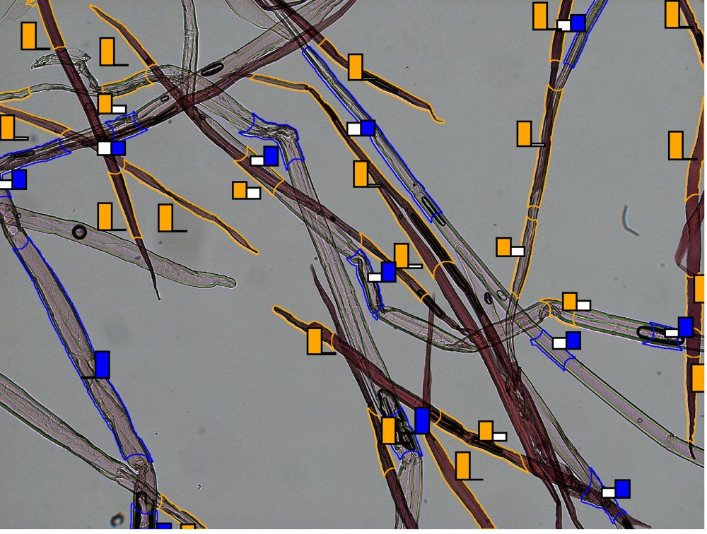
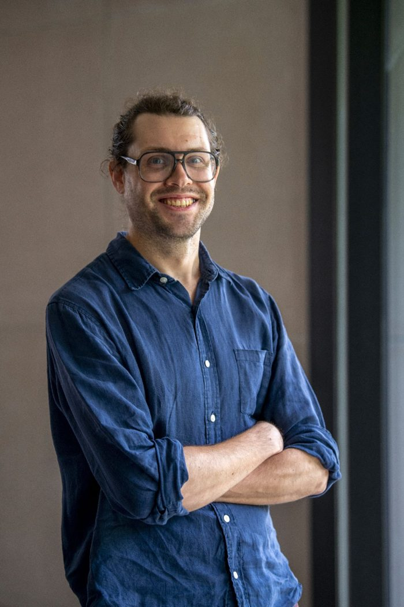
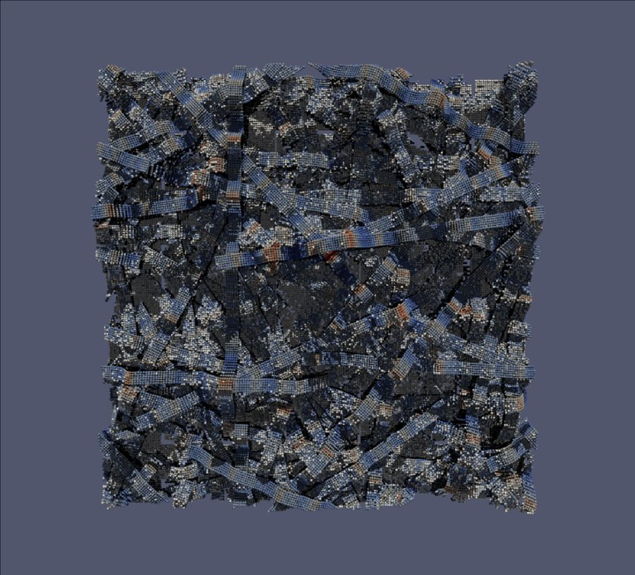

Measure the fiber
Pulp
Patent-pending software segments and characterizes each fiber from a microscope image, in real time on a $100 computer, without hand-labeled training data. It also reads recycled-fiber blends.
SeekInsight measures the fiber going into a paper machine, so mills can run more recycled fiber with fewer upsets.

The industry describes papermaking in four words: Pulp, Process, Product, and Properties. I've built systems for the first three.

Patent-pending software segments and characterizes each fiber from a microscope image, in real time on a $100 computer, without hand-labeled training data. It also reads recycled-fiber blends.
A physics-informed digital twin of a pilot paper machine, built from the machine's own operating data.

A simulation of the fiber network a given blend will form, from my master's work (2019).
Strength, bulk, and softness, which are what customers pay for. Connecting the first three stages to these needs production data; pilot-plant trials can supply it.
An example. A linerboard mill has to keep its virgin-fiber share above a minimum (say 80%), but it can only measure the blend to about ±1.1%, so it runs near 81.1% to be safe (an accuracy tax). Measuring to ±0.7% lets it run near 80.7%. Model estimate for a 900,000-ton mill, not a measured result.
Model estimate, not a measured mill result: linerboard blend of 80% virgin / 20% recycled fiber, ~900,000 tons/yr. Blend uncertainty ±1.1% (standard lab method) vs. ±0.7% (SeekInsight). Fiber alone ≈ $1.75M/yr; with chemical and refining-energy savings, $2.24/ton ≈ $2.0M/yr.
I'm looking for a co-founder to take on relationships, sales, and outreach. The first customers would be companies that already run trials on the University of Maine's pilot paper machine; the highest rung reached so far is customer interviews.
I'd also welcome introductions to people who run pilot trials at chemical or equipment suppliers, or who know how suppliers' in-kind pilot-equipment programs work.
Email me LinkedIn